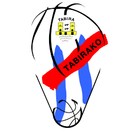
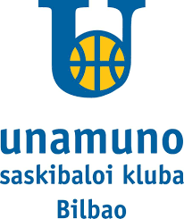
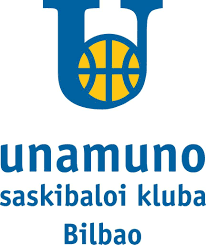

Ibaizabal
üìçIntxaurrrondo kalea 54, 48200 Durango (Bizkaia)
Web del equipo

La Salle
üìçMadariaga Hiribidea, 67, Deusto, 48014 Bilbao, Bizkaia
Web del equipo

Salesianos
üìçAVDA.LEHENDAKARI AGUIRRE, 75 - 48014 - Vizcaya
Web del equipo

Tabirako
üìçGP/ MURUETA TORRE AUZUNEA(P.LANDAKO) S/N - 48200 - Vizcaya
Web del equipo
 
